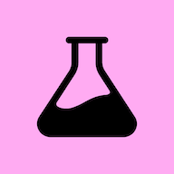
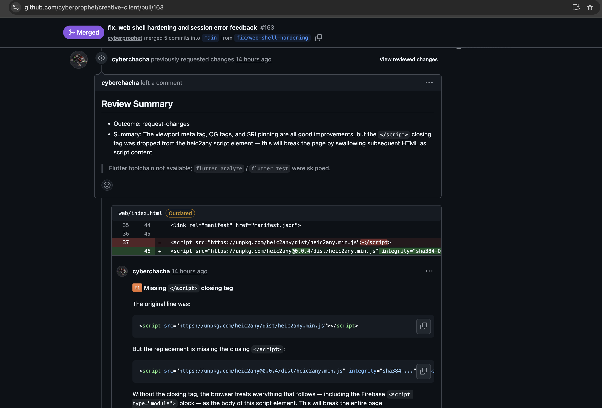
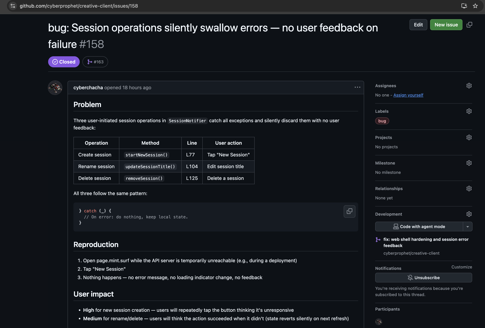

사용자가 경험하는 흐름
상품 이미지 하나로 시작해서, 완성된 상세페이지까지
Phase 1
Planning
상품 이미지와 간단한 설명 입력
AI가 질문하며 방향 설정
AI가 질문하며 방향 설정
Phase 2
Production
카피·이미지·레이아웃
자동 제작
자동 제작
Phase 3
Review
섹션별 리뷰
승인 및 수정
승인 및 수정
Phase 4
Completed
최종 페이지 출력
다운로드 및 내보내기
다운로드 및 내보내기
Project 3 AI Personas
하나의 AI가 아니라, 역할이 분리된 4명의 전문가
Hermes
Director
사용자 인터뷰, 리서치,
전체 워크플로우 조율
Apollo
Copywriter
마케팅 카피 작성,
스토리보드 구성
Athena
Designer
HTML/CSS 페이지
레이아웃·비주얼 제작
Pygmalion
Image Engineer
이미지 생성 프롬프트
설계·품질 관리
개발도 AI와 함께
AI 에이전트가 AI 에이전트를 개발하는 구조
Automation
페이지민트
Orchestrator
Project 3
Design Agency
powered by  Gemini
Gemini
Project 4
Bridge
powered by SDK
Project 5
PageMint Server
powered by PostgreSQL
Project 6
PageMint Client
built with

StitchQuality Assurance
-
PR ReviewClaude + Codex 이중 리뷰

-
Issue Review이슈 자동 분석 · 코멘트

- Test Suite865+ 테스트 자동 실행
2025년 상세페이지 외주 시장규모 1,500억
당신을 기다리고 있습니다.
당신을 기다리고 있습니다.
_